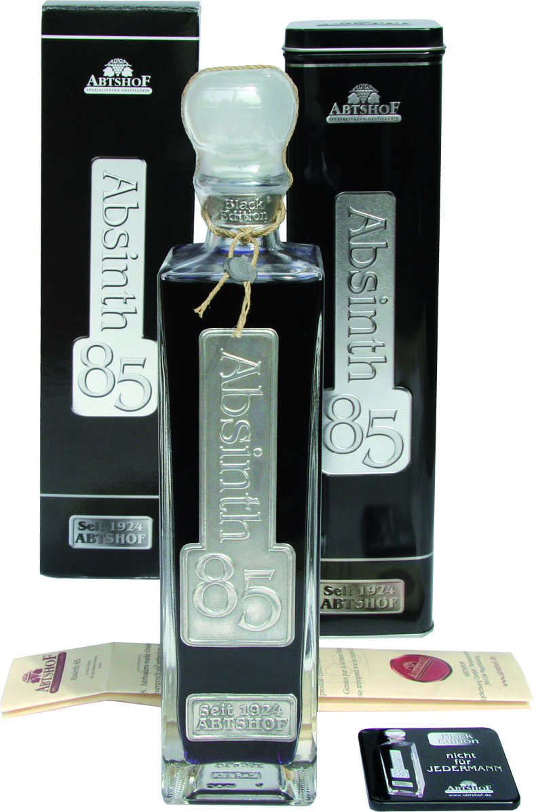

Aus dem Hause Abtshof, dem Marktführer im Bereich Absinth in Deutschland, wurde viele Jahre an einem besonders hochwertigen und edlen Absinth gearbeitet, der höchsten Ansprüchen genügt. Zum 85. Jubiläum der Spezialitäten-Destillerie wurde ein streng limitierter High-Premium-Absinth für die gehobene Gastronomie sowie Sammler besonderer Tropfen entwickelt. In der hauseigenen Manufaktur wird der „Absinth 85 – Black Edition“ in aufwändiger Handarbeit ausgestattet und bietet mit seinem hohen Alkoholgehalt und seinem feinen Geschmack ein Novum im Absinthbereich. Jede Flasche ist ein Unikat und wir per Hand nummeriert. (Bild: Befüllung/Beklebung mit weißen Handschuhen)
Dieses Spitzenprodukt wird aus hochwertigen Rohstoffen gewonnen und weist das feine krautige Aroma einer Schweizer Kräutermischung aus, ausbalanciert mit der zarten Bitternote des Wermuts, umspielt von Anis, Fenchel und einem Hauch Karamell.
Ein fünffach gebranntes Destillat und reinstes Wasser aus einer Gletscherquelle verleihen diesem Premiumprodukt einen edlen weichen Charakter. Die Black Edition hat einen Alkoholgehalt von 85% vol. und wird in einer dekorativen Umverpackung aus Feinblech präsentiert. Neben der edel gestalteten Flasche mit geprägtem Etikett enthält die Feinblechumhüllung eine Produktbeschreibung und ein kleines Schmuckmagnetschild mit Prägung. „Die Absinth 85 – Black Edition“ wird aufgrund ihres begrenzten Angebots fast ausschließlich über den Werks- oder Online-Shop verkauft und ist somit nur einem exklusiven Kreis zugänglich. (Bild: Produktbild edel)